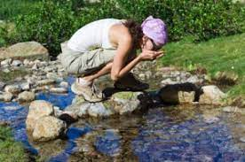

Natural of Wilderness
Knowledge
Water Source
Food Source
Signal Search

Introduction
Jesus chose the wilderness because he knew that while being alone and tempted,there was strength and authority to be gained by being alone with his Father. My advice guarantee safety and have a great adventure in the wilderness.
Contact Us